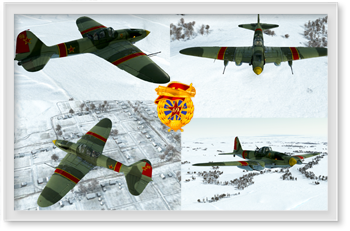

Squad Skins

We are already working on a 69.GIAP skin package for Battle of Stalingrad. The progress can be reviewed here. The skins will be added to the Skins Management tool once published. The indication if or if not published can be found below each collage.
Make sure you select the skins when playing online to represent our great squad.
Il-2 M42

not available